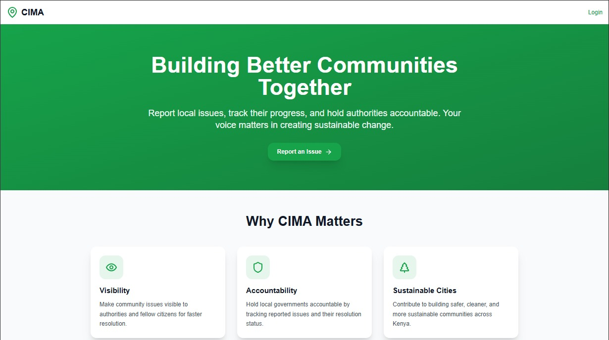
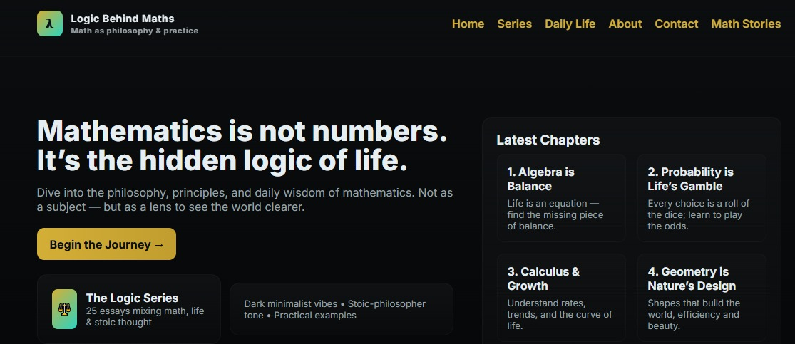
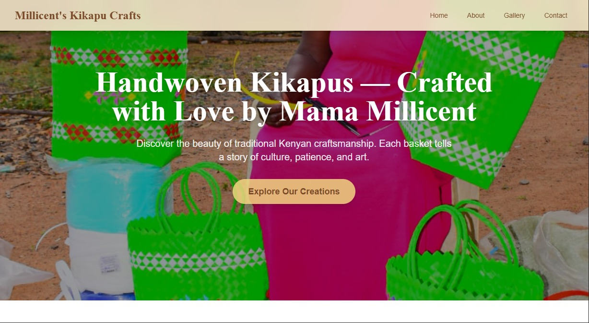
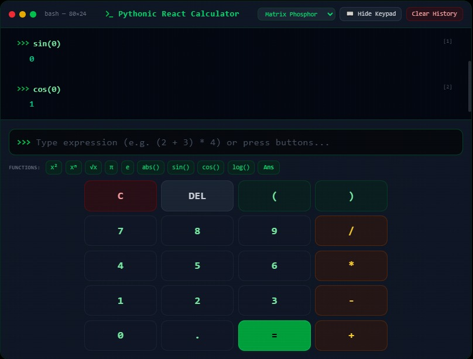

01
Community Issue
Management App
A civic-minded web experience for surfacing, organizing, and following local issues.
Product thinkingWeb appVercel
Software engineer / applied mathematics / Data Explorer
I’m Joshua Nuru, a Mathematics & Computer Science Alchemist. I turn complex ideas into useful, thoughtful web experiences — from the first model to the final interface.
01 / The throughline
Software engineering gives me the tools to build. Mathematics gives me the discipline to ask better questions, see patterns, and make decisions that hold up.
A little more about me02 / Selected work
A selection of interfaces, tools, and experiments built around real people and real problems.

01
A civic-minded web experience for surfacing, organizing, and following local issues.

02
Making mathematical ideas easier to see, understand, and remember.
03
A clear, approachable digital home for a computer services business.

04
A warm product showcase that lets the craft lead the experience.

05
An interactive and responsive calculator with the aesthetic of a Python REPL, built with React, TypeScript, and Tailwind CSS.
03 / Working principles
Good work is not only about what gets shipped. It’s about the thinking that makes the result useful.
Before choosing a tool or writing a component, I try to understand the person, constraint, and outcome behind the request.
Analytical thinking is useful when it helps someone make a decision, take an action, or understand something new.
I prefer a working first version and honest feedback over a perfect plan that never meets the people it is for.
04 / A little context
I’m studying Mathematics & Computer Science at Multimedia University of Kenya while building my practice in software development, data analysis, and digital product design.
My current toolkit includes JavaScript, React, Node.js, MongoDB, Python, SQL, Git, and the patience to keep working through the part that is not obvious yet.
05 / Your turn
Whether you’re building a product, exploring an idea, or looking for a thoughtful engineer to join the team, I’d like to hear about it.
nurujoshua724@gmail.com